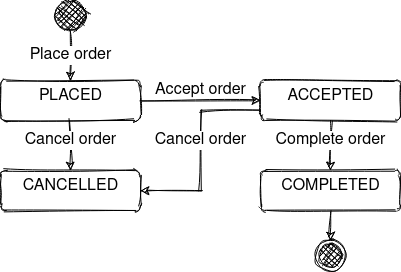
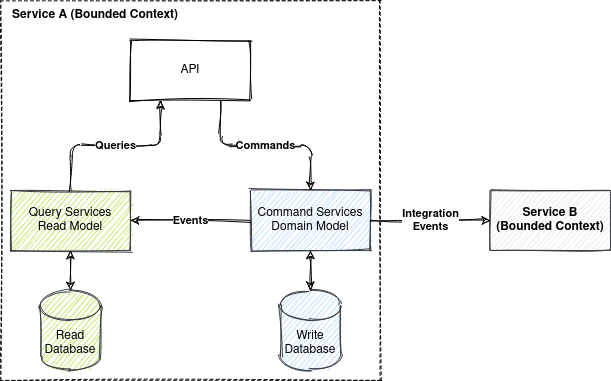

Event Sourcing with Kafka and ksqlDB
- Introduction
- Example Domain
- Event Sourcing and CQRS 101
- Requirements for Event Store
- Solution Architecture
- Why ksqlDB?
- How to Run the Sample?
Introduction
Kafka is not for event sourcing, isn't it?
Kafka alone is not an event store, but Kafka and ksqlDB together allow building full-featured event stores.
This repository provides a sample of event sourced system that uses Kafka and ksqlDB as event store.


See also
Example Domain
This sample uses heavily simplified ride hailing domain model inspired by tech/uklon experience.
- A rider can place an order for a ride along a route specifying a price.
- A driver can accept and complete an order.
- An order can be cancelled before completion.


Event Sourcing and CQRS 101
State-Oriented Persistence

Event Sourcing
Event sourcing persists the state of an entity as a sequence of immutable state-changing events.

Whenever the state of an entity changes, a new event is appended to the list of events.

Current state of an entity can be restored by replaying all its events.
Event sourcing is best suited for short-living entities with relatively small total number of event (like orders).
Restoring the state of the short-living entity by replaying all its events doesn't have any performance impact. Thus, no optimizations for restoring state are required for short-living entities.
For endlessly stored entities (like users or bank accounts) with thousands of events restoring state by replaying all events is not optimal and snapshotting should be considered.
Snapshotting is an optimization technique where a snapshot of the aggregate's state is also saved, so an application can restore the current state of an aggregate from the snapshot instead of from scratch.

An entity in event sourcing is also referenced as an aggregate.
A sequence of events for the same aggregate are also referenced as a stream.
CQRS
CQRS (Command-query responsibility segregation) stands for segregating the responsibility between commands (write requests) and queries (read requests). The write requests and the read requests are processed by different handlers.
A command generates zero or more events or results in an error.

CQRS is a self-sufficient architectural pattern and doesn't require event sourcing.
Event sourcing is usually used in conjunction with CQRS. Event store is used as a write database and SQL or NoSQL database as a read database.

Events in event sourcing are a part of a bounded context and should not be used "as-is" for integration with other bounded contexts. Integration events representing the current state of an aggregate should be used for communication between bounded contexts instead of a raw event sourcing change events.
Advantages of CQRS
- Independent scaling of the read and write databases.
- Optimized data schema for the read database (e.g. the read databases can be denormalized).
- Simpler queries (e.g. complex
JOINoperations can be avoided).
Advantages of Event Sourcing
- Having a true history of the system (audit and traceability).
- Ability to put the system in any prior state (e.g. for debugging).
- Read-side projections can be created as needed (later) from events. It allows responding to future needs and new requirements.
Requirements for Event Store
- Permanent storage. Store events forever.
- Optimistic concurrency control. Prevent lost update anomaly (write-write conflicts).
- Loading current state. Loading all previous events for the particular aggregate ID from an event store.
- Subscribe to all events by aggregate type. Instead of subscribing to a single event stream that represents an aggregate.
- Checkpoints. Store the event offset (a position in the stream) after handling it. Subscribe from the last known position instead of the stream start after the application restart.
Solution Architecture
Kafka Topic Architecture

- Topics are partitioned, meaning a topic is spread over a number of "buckets".
- Kafka preserves the order of messages within a partition. If messages were sent from the producer in a specific order, the broker will write them to a partition in that order and all consumers will read them in that order.
- Keys are used to decide to which partition message will go. All messages with the same key will go to the same partition.
- In one consumer group, each partition will be processed by one consumer only.
- Consumer commits an offset of a message after processing it. Thus, consumer will continue consuming messages from where it left off in the offset after a restart.
ksqlDB Streams vs Tables
A stream is a partitioned, immutable, append-only collection that represents a series of historical facts.
A table is a mutable, partitioned collection that models change over time and represents what is true as of "now".

Both steams and tables are backed by a Kafka topic.
The current state of a table is stored locally and ephemerally on a specific server by using RocksDB. The series of changes that are applied to a table is stored durably in a Kafka topic.

ksqlDb Event Store
Naive Solution (Not Working!)
- Commands are not persisted.
ORDER_EVENTSstream for storing events withAGGREGATE_IDas a key.ORDER_AGGREGATEStable aggregates events byAGGREGATE_ID(a key).- Command handler reads by ID aggregate events from
ORDER_AGGREGATEStable and appends new events toORDER_EVENTSstream.
CREATE STREAM ORDER_EVENTS (
AGGREGATE_ID STRING KEY,
TYPE STRING,
JSON_DATA STRING
) WITH (
KAFKA_TOPIC='order-events',
PARTITIONS=10,
REPLICAS=1,
VALUE_FORMAT='JSON'
);
CREATE TABLE ORDER_AGGREGATES WITH (
KAFKA_TOPIC='order-aggregates',
PARTITIONS=10,
REPLICAS=1,
VALUE_FORMAT='JSON'
) AS SELECT
AGGREGATE_ID,
COLLECT_LIST(TYPE) AS TYPE_LIST,
COLLECT_LIST(JSON_DATA) AS JSON_DATA_LIST
FROM ORDER_COMMANDS_AND_EVENTS
GROUP BY AGGREGATE_ID
EMIT CHANGES;
ksqlDB persistent query that does the stream aggregation into a table runs as a background process.
There is no guarantee that the command handler will read the latest version of the aggregate.
Working Solution
- Commands and events are persistent in the same stream
ORDER_COMMANDS_AND_EVENTSwithAGGREGATE_IDas a key to preserve ordering. ORDER_AGGREGATEStable aggregates commands and events (COLLECT_LIST) byAGGREGATE_ID(a key).- Command handler consumes commands from
order-aggregatestopic where changes inORDER_AGGREGATESare published. Thus, processing command B that follows command A, it will be possible to read all previous events generated by command A. - Event handler consumes events form
order-aggregatestopic, updates the read database and sends integration events.
CREATE STREAM IF NOT EXISTS ORDER_COMMANDS_AND_EVENTS (
AGGREGATE_ID STRING KEY,
IS_COMMAND BOOLEAN,
TYPE STRING,
JSON_DATA STRING
) WITH (
KAFKA_TOPIC='order-commands-and-events',
PARTITIONS=10,
REPLICAS=1,
VALUE_FORMAT='JSON'
);
CREATE TABLE IF NOT EXISTS ORDER_AGGREGATES WITH (
KAFKA_TOPIC='order-aggregates',
PARTITIONS=10,
REPLICAS=1,
VALUE_FORMAT='JSON'
) AS SELECT
AGGREGATE_ID,
COLLECT_LIST(IS_COMMAND) AS IS_COMMAND_LIST,
COLLECT_LIST(TYPE) AS TYPE_LIST,
COLLECT_LIST(JSON_DATA) AS JSON_DATA_LIST
FROM ORDER_COMMANDS_AND_EVENTS
GROUP BY AGGREGATE_ID
EMIT CHANGES;
All parts together look like this
Permanent Storage
Events can be stored in Kafka topics permanently.
To set retention to "forever" set properties in kafka.properties
log.retention.ms=-1
log.retention.bytes=-1
or environment variables for confluentinc/cp-kafka image
KAFKA_LOG_RETENTION_MS: -1
KAFKA_LOG_RETENTION_BYTES: -1
For storing huge volumes of data in Kafka use Tired Storage.
Optimistic concurrency control
Command must generate one or more events in order to implement optimistic concurrency control.
Commands and events for the same aggregate are processed sequentially because:
- Messages with the same key goes to the same partition.
- Kafka preserves the order of messages within a partition.
- Each partition is processed by one consumer only.
Thus, optimistic concurrency control based on version check can be implemented:
- Actual aggregate version must match the expected version specified in a command.
- The last entry from the stream must be a command, and the last but one must be an event. If both entries (the last and the last but one) are commands, it's a concurrent modification.
class OrderCommandHandler {
// ...
private boolean checkVersionMatches(
Command latestCommand, List<Command> unprocessedCommands, Order order) {
if (order.getBaseVersion() != latestCommand.getExpectedVersion()) {
// Actual version doesn't match expected version
return false;
}
if (unprocessedCommands.size() > 1) {
// Concurrent modification
return false;
}
return true;
}
}
Also, set a Kafka producer property max.in.flight.requests.per.connection=1 to make sure that
while a batch of messages is retrying, additional messages will not be sent.
It is possible that the broker will fail to write the first batch of messages, succeed to write the second, and then retry the first batch and succeed, thereby reversing the order.
Loading current state
There is no need to do a remote call to fetch all events for an aggregate.
ORDER_AGGREGATES table records and messages in its changelog topic order-aggregates contain all
aggregate events and commands (COLLECT_LIST(JSON_DATA)).
When a command, or an event is consumed from order-aggregates topic, the message already contains
all aggregate events.
However, it is also possible to fetch all events for an aggregate with ksqlDB SQL query
SELECT * FROM ORDER_AGGREGATES WHERE AGGREGATE_ID='${orderId}' AND IS_COMMAND=false;
Subscribe to all events by aggregate type
ORDER_AGGREGATES table and in its changelog topic order-aggregates contain all aggregates of the
same type.
Consumers of order-aggregates topic receive all commands and events related to the same aggregate
type.
Checkpoints
Consumer commits offset of the last message after processing it. Consumer will continue consuming messages from where it left off in the offset after a restart.
Drawbacks
- Commands have to be persisted. It's easy to flood the system with invalid commands that will take a lot of space in the storage.
- Commands are processed asynchronously, so after submitting a command a result of processing can't be received synchronously. API should be designed with asynchrony in mind.
- Errors have to be modelled as events due to asynchronous command processing. A command resulting
in error produces the
ErrorEventand increments the aggregate version. - A command must generate one or more events (and never zero events). Otherwise, optimistic concurrency check implementation will work incorrectly.
- Adding event sourcing snapshotting is possible but will complicate the solution even more.
Why ksqlDB?
It is possible to build event sourced systems with Kafka Streams, but I find ksqlDB simpler and more convenient solution for event sourcing because Kafka Streams has a few limitations:
- Kafka Streams is a library for JVM (Java, Scala etc.) and not a server.
- Kafka Streams DSL has steep learning curve compared to the SQL dialect of ksqlDB.
- The full state of an application is split across many distributed instances of the application.
Kafka Streams allows an application to query its local state stores for the locally managed
portion of the state. To query the full state, you must connect the various fragments of the state
with and RPC
org.apache.kafka.streams.state.HostInfo hostInfo = interactiveQueryService.getHostInfo("store-name", key, keySerializer); if (interactiveQueryService.getCurrentHostInfo().equals(hostInfo)) { //query from the store that is locally available } else { //query from the remote host RestTemplate restTemplate = new RestTemplate(); return restTemplate.postForObject(String.format("http://%s:%d/%s", hostInfo.host(), hostInfo.port(), "endpoint"), ...); }
ksqlDB is actually uses Kafka Streams internally to provide higher level of abstraction. Thus, ksqlDB has the following advantages:
- ksqlDB is a standalone server.
- Can be run in a cluster.
- Supports SQL dialect for queries.
- Has CLI and HTTP/2 API. Thus, can be used with any programming language (HTTP API and CLI are disabled when ksqlDB is started in headless mode).
How to Run the Sample?
-
Download & installOpenJDK 11 (LTS) at AdoptOpenJDK.
-
Download and install Docker and Docker Compose.
-
Build Java project and Docker image
./gradlew clean build jibDockerBuild -i -
Run Kafka, ksqlDB and event-sourcing-app
docker-compose up -d --scale event-sourcing-app=2 # wait a few minutes -
Follow the logs of the application
docker-compose logs -f event-sourcing-app -
Run
test.shscript and see the output.
The test.sh script has the following instructions:
- Place new order.
ORDER_ID=$(curl -s -X POST http://localhost:8080/orders/ -d '{"riderId":"63770803-38f4-4594-aec2-4c74918f7165","price":"123.45","route":[{"address":"Київ, вулиця Полярна, 17А","lat":50.51980052414157,"lon":30.467197278948536},{"address":"Київ, вулиця Новокостянтинівська, 18В","lat":50.48509161169076,"lon":30.485170724431292}]}' -H 'Content-Type: application/json' | jq -r .orderId) sleep 1s - Get the placed order.
curl -s -X GET http://localhost:8080/orders/$ORDER_ID | jq{ "id": "827e3a63-d252-415f-af60-94c5a36bfcd6", "version": 1, "status": "PLACED", "riderId": "63770803-38f4-4594-aec2-4c74918f7165", "price": 123.45, "route": [ { "address": "Київ, вулиця Полярна, 17А", "lat": 50.51980052414157, "lon": 30.467197278948536 }, { "address": "Київ, вулиця Новокостянтинівська, 18В", "lat": 50.48509161169076, "lon": 30.485170724431292 } ], "placedDate": "2021-04-23T15:26:22.543938Z", "errors": [] } - Accept the order. Try to cancel the order concurrently to simulate a write-write conflict.
curl -s -X PATCH http://localhost:8080/orders/$ORDER_ID -d '{"status":"ACCEPTED","driverId":"2c068a1a-9263-433f-a70b-067d51b98378","version":1}' -H 'Content-Type: application/json' curl -s -X PATCH http://localhost:8080/orders/$ORDER_ID -d '{"status":"CANCELLED","version":1}' -H 'Content-Type: application/json' sleep 1s - Get the accepted order with optimistic concurrency control error.
curl -s -X GET http://localhost:8080/orders/$ORDER_ID | jq{ "id": "827e3a63-d252-415f-af60-94c5a36bfcd6", "version": 2, "status": "ACCEPTED", "riderId": "63770803-38f4-4594-aec2-4c74918f7165", "price": 123.45, "route": [ { "address": "Київ, вулиця Полярна, 17А", "lat": 50.51980052414157, "lon": 30.467197278948536 }, { "address": "Київ, вулиця Новокостянтинівська, 18В", "lat": 50.48509161169076, "lon": 30.485170724431292 } ], "driverId": "2c068a1a-9263-433f-a70b-067d51b98378", "placedDate": "2021-04-23T15:26:22.543938Z", "acceptedDate": "2021-04-23T15:26:23.542921Z", "errors": [ { "command": "CancelOrderCommand", "expectedVersion": 1, "message": "Concurrent modification" } ] } - Try to cancel an outdated version of the order to simulate lost update.
curl -s -X PATCH http://localhost:8080/orders/$ORDER_ID -d '{"status":"CANCELLED","version":1}' -H 'Content-Type: application/json' sleep 1s - Get the accepted order with optimistic concurrency control error.
curl -s -X GET http://localhost:8080/orders/$ORDER_ID | jq{ "id": "827e3a63-d252-415f-af60-94c5a36bfcd6", "version": 2, "status": "ACCEPTED", "riderId": "63770803-38f4-4594-aec2-4c74918f7165", "price": 123.45, "route": [ { "address": "Київ, вулиця Полярна, 17А", "lat": 50.51980052414157, "lon": 30.467197278948536 }, { "address": "Київ, вулиця Новокостянтинівська, 18В", "lat": 50.48509161169076, "lon": 30.485170724431292 } ], "driverId": "2c068a1a-9263-433f-a70b-067d51b98378", "placedDate": "2021-04-23T15:26:22.543938Z", "acceptedDate": "2021-04-23T15:26:23.542921Z", "errors": [ { "command": "CancelOrderCommand", "expectedVersion": 1, "message": "Concurrent modification" }, { "command": "CancelOrderCommand", "expectedVersion": 1, "message": "Actual version 2 doesn't match expected version 1" } ] } - Try to cancel a version of the order 'from the future' to simulate unordering.
curl -s -X PATCH http://localhost:8080/orders/$ORDER_ID -d '{"status":"CANCELLED","version":3}' -H 'Content-Type: application/json' sleep 1s - Get the accepted order with optimistic concurrency control error.
curl -s -X GET http://localhost:8080/orders/$ORDER_ID | jq{ "id": "827e3a63-d252-415f-af60-94c5a36bfcd6", "version": 2, "status": "ACCEPTED", "riderId": "63770803-38f4-4594-aec2-4c74918f7165", "price": 123.45, "route": [ { "address": "Київ, вулиця Полярна, 17А", "lat": 50.51980052414157, "lon": 30.467197278948536 }, { "address": "Київ, вулиця Новокостянтинівська, 18В", "lat": 50.48509161169076, "lon": 30.485170724431292 } ], "driverId": "2c068a1a-9263-433f-a70b-067d51b98378", "placedDate": "2021-04-23T15:26:22.543938Z", "acceptedDate": "2021-04-23T15:26:23.542921Z", "errors": [ { "command": "CancelOrderCommand", "expectedVersion": 1, "message": "Concurrent modification" }, { "command": "CancelOrderCommand", "expectedVersion": 1, "message": "Actual version 2 doesn't match expected version 1" }, { "command": "CancelOrderCommand", "expectedVersion": 3, "message": "Actual version 2 doesn't match expected version 3" } ] } - Complete the order.
curl -s -X PATCH http://localhost:8080/orders/$ORDER_ID -d '{"status":"COMPLETED","version":2}' -H 'Content-Type: application/json' sleep 1s - Get the completed order.
curl -s -X GET http://localhost:8080/orders/$ORDER_ID | jq{ "id": "827e3a63-d252-415f-af60-94c5a36bfcd6", "version": 3, "status": "COMPLETED", "riderId": "63770803-38f4-4594-aec2-4c74918f7165", "price": 123.45, "route": [ { "address": "Київ, вулиця Полярна, 17А", "lat": 50.51980052414157, "lon": 30.467197278948536 }, { "address": "Київ, вулиця Новокостянтинівська, 18В", "lat": 50.48509161169076, "lon": 30.485170724431292 } ], "driverId": "2c068a1a-9263-433f-a70b-067d51b98378", "placedDate": "2021-04-23T15:26:22.543938Z", "acceptedDate": "2021-04-23T15:26:23.542921Z", "completedDate": "2021-04-23T15:26:26.791512Z", "errors": [ { "command": "CancelOrderCommand", "expectedVersion": 1, "message": "Concurrent modification" }, { "command": "CancelOrderCommand", "expectedVersion": 1, "message": "Actual version 2 doesn't match expected version 1" }, { "command": "CancelOrderCommand", "expectedVersion": 3, "message": "Actual version 2 doesn't match expected version 3" } ] } - Try to cancel a completed order to simulate business rule violation.
curl -s -X PATCH http://localhost:8080/orders/$ORDER_ID -d '{"status":"CANCELLED","version":3}' -H 'Content-Type: application/json' sleep 1s - Get the completed order with business rule validation error.
curl -s -X GET http://localhost:8080/orders/$ORDER_ID | jq{ "id": "827e3a63-d252-415f-af60-94c5a36bfcd6", "version": 3, "status": "COMPLETED", "riderId": "63770803-38f4-4594-aec2-4c74918f7165", "price": 123.45, "route": [ { "address": "Київ, вулиця Полярна, 17А", "lat": 50.51980052414157, "lon": 30.467197278948536 }, { "address": "Київ, вулиця Новокостянтинівська, 18В", "lat": 50.48509161169076, "lon": 30.485170724431292 } ], "driverId": "2c068a1a-9263-433f-a70b-067d51b98378", "placedDate": "2021-04-23T15:26:22.543938Z", "acceptedDate": "2021-04-23T15:26:23.542921Z", "completedDate": "2021-04-23T15:26:26.791512Z", "errors": [ { "command": "CancelOrderCommand", "expectedVersion": 1, "message": "Concurrent modification" }, { "command": "CancelOrderCommand", "expectedVersion": 1, "message": "Actual version 2 doesn't match expected version 1" }, { "command": "CancelOrderCommand", "expectedVersion": 3, "message": "Actual version 2 doesn't match expected version 3" }, { "command": "CancelOrderCommand", "expectedVersion": 3, "message": "Order in status COMPLETED can't be cancelled" } ] } - Print integration events.
docker exec -it kafka /bin/kafka-console-consumer --bootstrap-server localhost:9092 --topic order-integration-events --from-beginning --property print.key=true --timeout-ms 3000827e3a63-d252-415f-af60-94c5a36bfcd6 {"order_id":"827e3a63-d252-415f-af60-94c5a36bfcd6","event_type":"OrderPlacedEvent","event_timestamp":1619191582543,"version":1,"status":"PLACED","rider_id":"63770803-38f4-4594-aec2-4c74918f7165","price":123.45,"route":[{"ADDRESS":"Київ, вулиця Полярна, 17А","LAT":50.51980052414157,"LON":30.467197278948536},{"ADDRESS":"Київ, вулиця Новокостянтинівська, 18В","LAT":50.48509161169076,"LON":30.485170724431292}]} 827e3a63-d252-415f-af60-94c5a36bfcd6 {"order_id":"827e3a63-d252-415f-af60-94c5a36bfcd6","event_type":"OrderAcceptedEvent","event_timestamp":1619191583542,"version":2,"status":"ACCEPTED","rider_id":"63770803-38f4-4594-aec2-4c74918f7165","price":123.45,"route":[{"ADDRESS":"Київ, вулиця Полярна, 17А","LAT":50.51980052414157,"LON":30.467197278948536},{"ADDRESS":"Київ, вулиця Новокостянтинівська, 18В","LAT":50.48509161169076,"LON":30.485170724431292}],"driver_id":"2c068a1a-9263-433f-a70b-067d51b98378"} 827e3a63-d252-415f-af60-94c5a36bfcd6 {"order_id":"827e3a63-d252-415f-af60-94c5a36bfcd6","event_type":"OrderCompletedEvent","event_timestamp":1619191586791,"version":3,"status":"COMPLETED","rider_id":"63770803-38f4-4594-aec2-4c74918f7165","price":123.45,"route":[{"ADDRESS":"Київ, вулиця Полярна, 17А","LAT":50.51980052414157,"LON":30.467197278948536},{"ADDRESS":"Київ, вулиця Новокостянтинівська, 18В","LAT":50.48509161169076,"LON":30.485170724431292}],"driver_id":"2c068a1a-9263-433f-a70b-067d51b98378"}